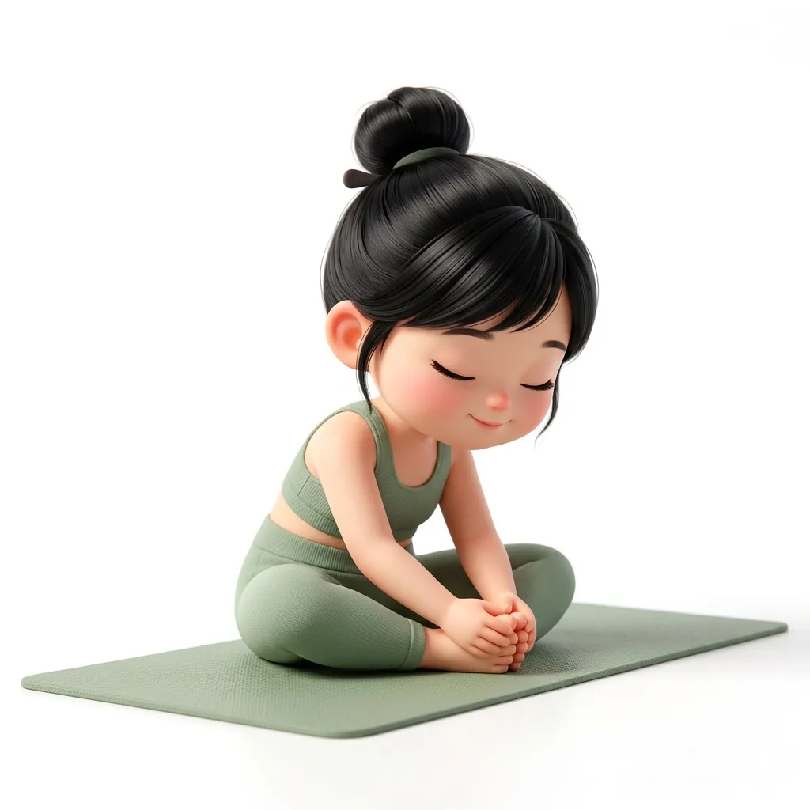
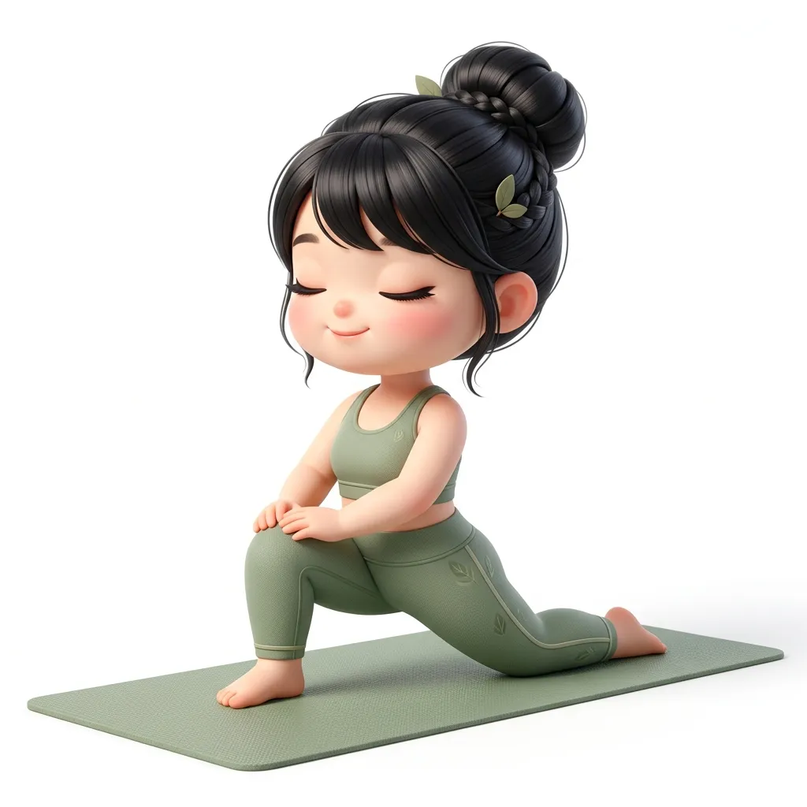
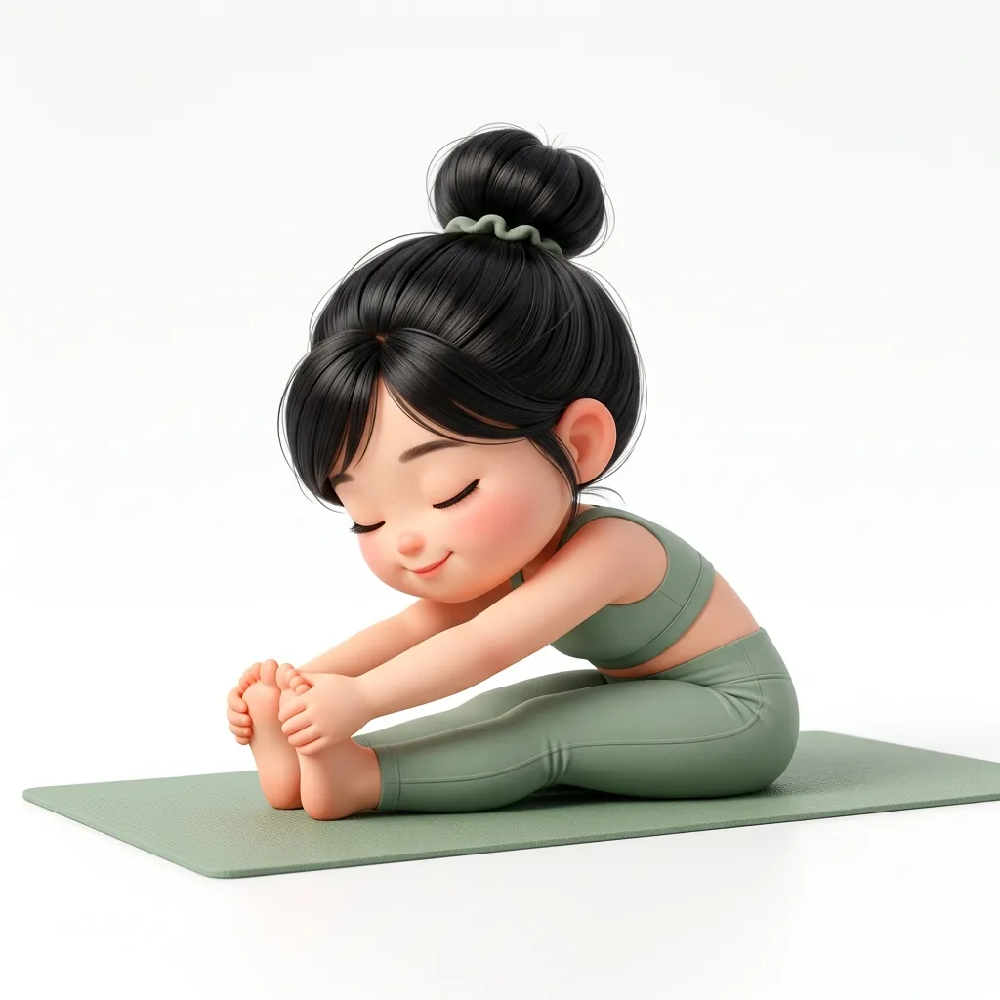
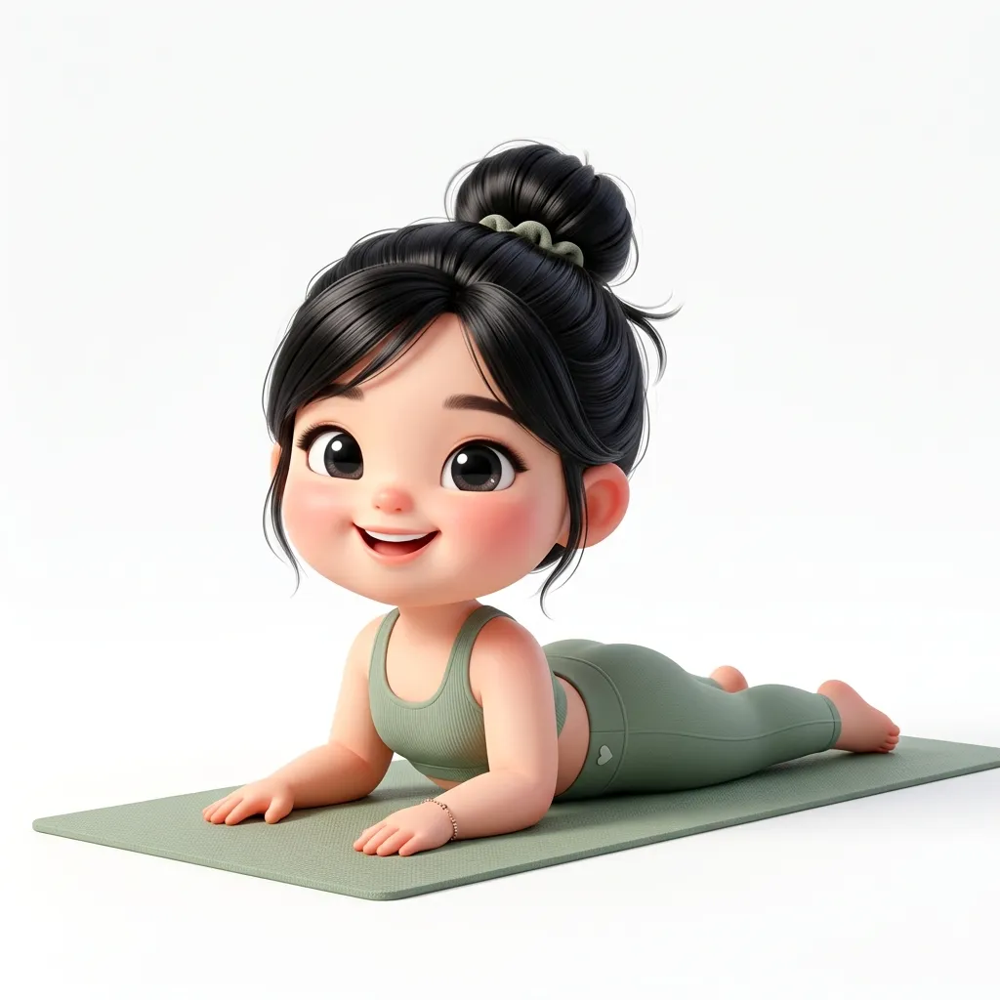
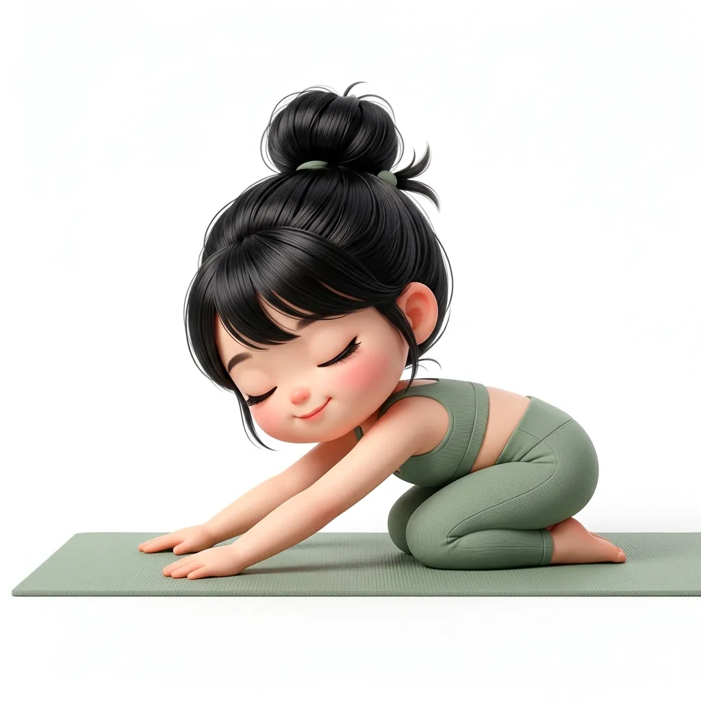

📑 Trong bài viết này
Yin Yoga là gì?
Yin Yoga là phong cách yoga chậm rãi, tĩnh lặng — nơi bạn giữ mỗi tư thế từ 3 đến 5 phút (thậm chí 7 phút). Khác hoàn toàn với Vinyasa hay Ashtanga (nơi bạn liên tục di chuyển), Yin Yoga đòi hỏi bạn ở yên, buông bỏ, và thở.
Phong cách này được phát triển bởi Paul Grilley và Sarah Powers trong những năm 1980-90, kết hợp triết lý Đạo giáo (Âm-Dương) với giải phẫu học hiện đại. Yin Yoga tác động chủ yếu lên mô liên kết (fascia), gân, dây chằng và khớp — những mô "yin" không được kích thích trong yoga "yang" thông thường.
"Yin Yoga không phải là làm ít hơn. Nó là cho phép bản thân cảm nhận nhiều hơn." — Bernie Clark
Yin vs. Yang Yoga ☯️
Cơ thể cần cả Yin và Yang. Nếu bạn tập Vinyasa/Hatha 3-4 lần/tuần, thêm 1-2 buổi Yin Yoga sẽ tạo sự cân bằng hoàn hảo — phục hồi mô liên kết, ngăn chấn thương, và nuôi dưỡng tâm trí.
Lợi ích khoa học đã chứng minh
- 🧬 Tăng dẻo dai sâu — kéo giãn fascia, gân, dây chằng (yoga yang chỉ kéo giãn cơ)
- 🦴 Cải thiện sức khỏe khớp — tăng tiết dịch bôi trơn khớp (synovial fluid)
- 😌 Giảm lo âu 40% — nghiên cứu từ Journal of Clinical Psychology (2018)
- 💤 Cải thiện giấc ngủ — kích hoạt hệ phó giao cảm sâu
- 🧠 Tăng khả năng chịu đựng — rèn luyện "ngồi với sự khó chịu" → tăng sức bền tinh thần
- 🔄 Kích thích kinh mạch — theo Y học cổ truyền Trung Hoa, mỗi tư thế Yin kích thích một đường kinh cụ thể
3 nguyên tắc vàng của Yin Yoga
1. Tìm đến rìa vừa phải (Appropriate Edge) 🎯
Đi đến điểm mà bạn cảm thấy kéo giãn rõ rệt nhưng không đau. Cường độ nên ở mức 6-7/10. Nếu bạn cảm thấy đau nhói hoặc tê → quá sâu, cần lùi lại.
2. Giữ yên và buông bỏ cơ bắp (Stillness) 🧘
Khi đã vào tư thế, ngừng di chuyển. Thả lỏng hoàn toàn mọi cơ bắp vùng đang kéo giãn. Yin Yoga tác động lên mô liên kết — cơ bắp phải thả lỏng để lực kéo giãn đi sâu vào fascia.
3. Giữ đủ lâu (Duration) ⏱️
Mô liên kết cần thời gian để phản hồi. Người mới: 2-3 phút. Trung bình: 3-5 phút. Nâng cao: 5-7 phút.
5 tư thế Yin Yoga cho người mới
1. Butterfly / Baddha Konasana — Tư thế bướm 🦋

Tác động: Háng, hông, lưng dưới | Giữ: 3-5 phút
- Ngồi, hai lòng bàn chân chạm nhau, đầu gối mở sang hai bên
- Để chân cách háng khoảng 30-40 cm (không kéo sát)
- Gập người về phía trước từ từ → để lưng tròn tự nhiên (khác Hatha yoga luôn giữ lưng thẳng!)
- Đặt tay hoặc gối trước mặt để tựa đầu
2. Dragon / Low Lunge — Tư thế rồng 🐉

Tác động: Cơ gấp hông, đùi trước | Giữ: 3 phút mỗi bên
- Lunge thấp: chân trước gập 90°, gối sau chạm đất
- Trượt gối sau ra xa dần, hạ hông xuống
- Tay đặt lên gối trước hoặc hai bên trên sàn
- Cảm nhận kéo giãn sâu ở cơ gấp hông chân sau
3. Caterpillar / Paschimottanasana — Tư thế sâu bướm 🐛

Tác động: Lưng, gân kheo, cột sống | Giữ: 4-5 phút
- Ngồi duỗi hai chân thẳng về phía trước
- Gập người về phía trước, để lưng tròn tự nhiên
- Tay đặt lên chân hoặc sàn — không cần chạm ngón chân
- Đặt gối hoặc bolster lên chân để tựa đầu nếu cần
4. Sphinx — Tư thế nhân sư 🗿

Tác động: Cột sống, lưng dưới | Giữ: 3-5 phút
- Nằm sấp, khuỷu tay chống sàn ngay dưới vai
- Nâng ngực nhẹ, giữ hông và chân dưới chạm sàn
- Cảm nhận nén nhẹ ở lưng dưới — đây là cảm giác bình thường
5. Child's Pose / Balasana — Tư thế em bé 👶

Tác động: Hông, đùi, lưng dưới | Giữ: 3-5 phút
- Quỳ, ngồi lùi lên gót, gối mở rộng
- Gập người về phía trước, tay duỗi thẳng hoặc thu về
- Trán chạm sàn hoặc gối. Thở sâu và đều.
Lưu ý quan trọng
• Người có dây chằng quá lỏng lẻo (hypermobility) — Yin có thể làm tệ hơn
• Đang bị viêm khớp cấp tính
• Vừa phẫu thuật hoặc chấn thương mới ở vùng tập
• Phụ nữ mang thai — một số tư thế cần điều chỉnh
Nhớ: Trong Yin Yoga, cảm giác kéo giãn sâu và hơi khó chịu là bình thường. Nhưng đau nhói, tê, hoặc đau buốt là KHÔNG bình thường — cần lùi lại ngay.